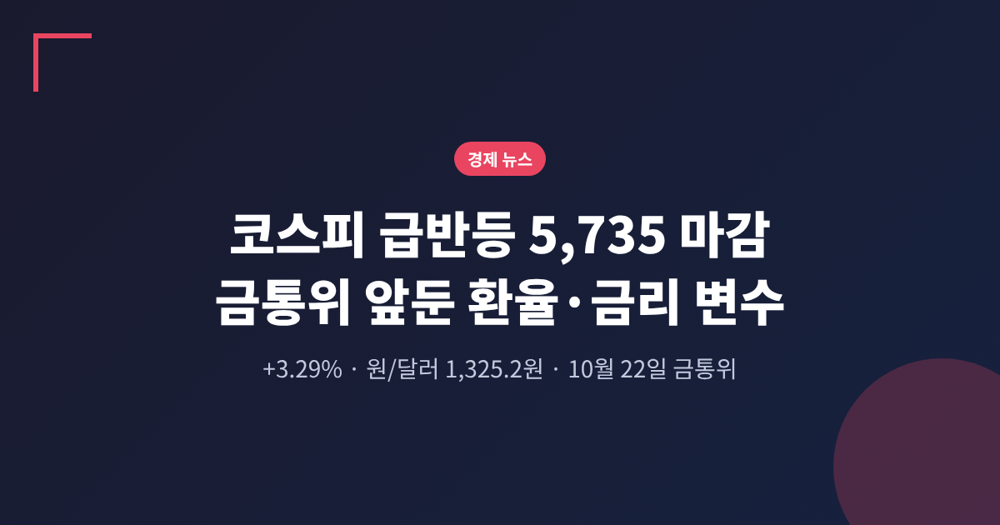
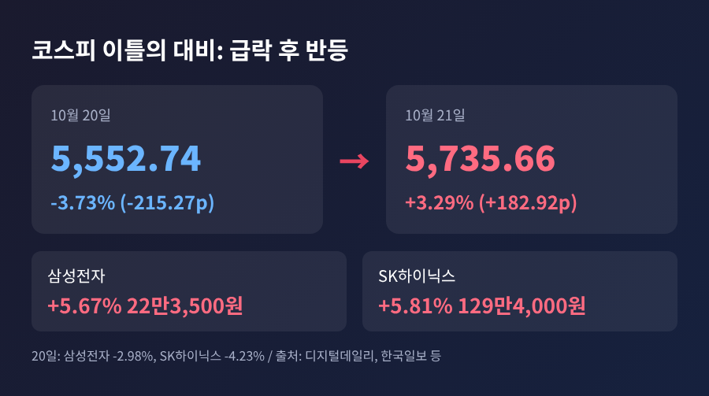
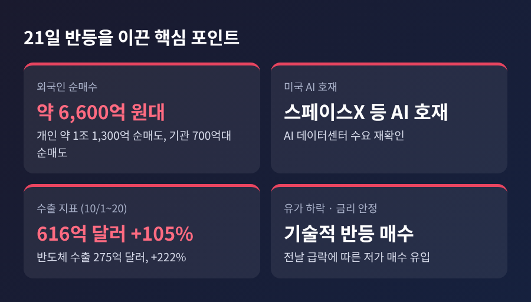
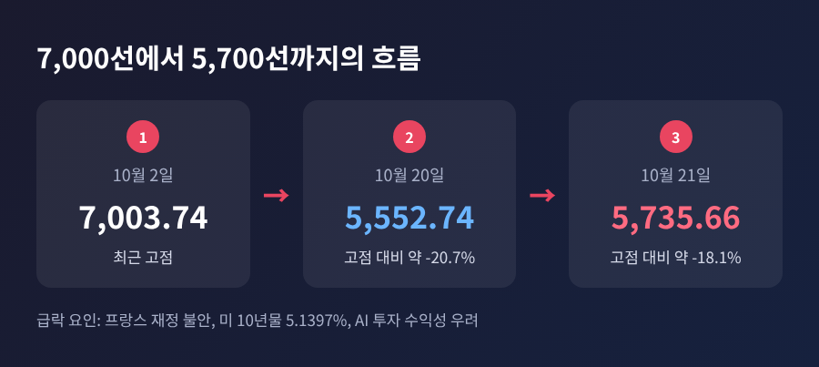
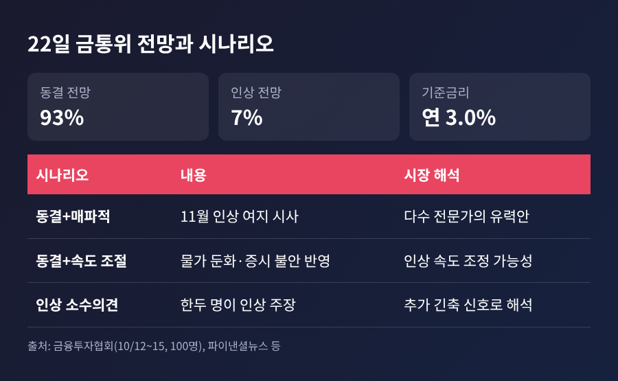

3줄 요약 - 코스피가 5,735.66에 마감해 3.29% 올랐고, 원/달러 환율은 1,325.2원으로 내렸습니다. - 전날 3.73% 급락의 되돌림에 외국인 순매수와 미국 AI 호재가 겹쳤습니다. - 22일 금통위는 동결이 압도적 전망이나, 11월 인상 가능성이 시장의 진짜 쟁점입니다.
이번 글에서는 21일 코스피 급반등의 배경과 하루 뒤 열리는 한국은행 금융통화위원회의 변수를 정리해 보겠습니다. 무슨 일이 있었는지, 왜 중요한지, 앞으로 어떤 시나리오가 있는지 순서대로 짚습니다.
■ 무슨 일이 있었나: 하루 만에 급락분을 되돌린 코스피
21일 코스피는 전 거래일보다 182.92포인트 오른 5,735.66에 거래를 마쳤습니다. 상승률은 3.29%입니다. 시가는 5,666.34, 장중 고점은 5,816.43까지 올랐지만 5,800선은 지키지 못했습니다.
오전 10시 51분께에는 매수 사이드카가 발동됐습니다. 프로그램 매수호가 효력을 5분간 멈추는 제도로, 8월 20일 이후 약 두 달 만입니다. 올해 코스피 매수 사이드카로는 25번째였습니다.
주도한 쪽은 반도체였습니다. 삼성전자는 5.67% 올라 22만3,500원, SK하이닉스는 5.81% 올라 129만4,000원에 마감했습니다. 반면 LG에너지솔루션은 0.60%, 현대차는 0.16% 내렸습니다. 지수 전체가 고르게 오른 장은 아니었다는 뜻입니다.

■ 왜 올랐나: 외국인 매수와 미국 AI 호재
수급부터 보면, 외국인이 6,600억 원대를 순매수하며 반등을 이끌었습니다. 개인은 1조 1,300억 원가량을 순매도했고, 기관도 700억 원대 순매도였습니다. 전날 외국인과 기관이 합쳐 1조 5,399억 원을 팔았던 것과 정반대 그림입니다.
재료는 미국에서 왔습니다. 대신증권 이경민 연구원은 스페이스X의 AI 연산 시설투자 확대 계획과 슈퍼마이크로컴퓨터의 시장 전망치를 웃돈 매출총이익률을 근거로 AI 데이터센터 수요가 재확인됐다고 분석했습니다. 한국일보에 따르면 스페이스X의 3분기 매출은 145억 8,000만 달러로 전년 동기보다 161% 늘었고, 흑자로 돌아섰습니다.
여기에 뉴욕 시장의 국제유가 하락과 미 국채금리 안정, 급락 뒤의 기술적 반등 매수가 더해졌습니다. 수출 지표도 뒷받침했습니다. 10월 1~20일 수출액은 616억 달러로 1년 전보다 105% 늘었고, 반도체 수출은 275억 달러로 222% 급증했습니다. 일평균 수출액 47억 4천만 달러는 역대 최대입니다.
다만 한계도 있습니다. 장중에는 외국인 순매수가 오전 6,466억 원에서 오후 4,183억 원으로 줄었다가 마감에서 다시 불었습니다. 코스피200 선물에서는 외국인이 1조 640억 원 매도 우위였다는 집계도 있습니다. 현물과 선물에서 외국인의 방향이 엇갈렸다는 점은 가볍게 넘기기 어렵습니다.

■ 배경: 한 달도 안 돼 20% 빠진 장
반등이 커 보이는 이유는 직전 낙폭이 컸기 때문입니다. 20일 코스피는 215.27포인트, 3.73% 급락해 5,552.74로 마감했습니다. 이틀간의 반등분이 하루 만에 사라졌고, 장중에는 5,493.24까지 밀렸습니다.
당시 거론된 원인은 세 가지였습니다. 프랑스의 정치·재정 불안(프랑스 10년물 금리 4.9%), 중동 긴장과 유가 상승에 따른 미국 10년물 금리 5.1397%, 그리고 AI 투자 수익성에 대한 의구심입니다. 김정은 사망설이 돌았으나 디지털데일리는 설득력 있는 원인으로 보기 어렵다고 평가했습니다.
더 큰 흐름으로 보면 2일 7,003.74에서 20일 5,552.74까지 약 20.7% 내렸습니다. 21일 종가도 고점보다 약 18.1% 낮습니다. 예전엔 7,000선을 논하던 시장이었고, 지금은 5,800선 회복 여부를 따지는 시장이 됐습니다. 이번 반등을 추세 전환으로 단정하기엔 이른 이유입니다.

■ 환율은 왜 내렸나: 원/달러 1,325.2원의 의미
원/달러 환율은 주간 종가 기준 1,325.2원으로 전날보다 2.9원 내렸습니다. 4거래일 연속 하락이고, 2024년 10월 2일 이후 가장 낮은 수준입니다.
흐름은 더 길게 봐야 합니다. 환율은 3월 1,492.5원, 6월 1,528.0원까지 올랐다가 7월 1,488.9원, 8월 1,404.4원, 9월 1,358.8원으로 석 달 연속 내렸습니다. 이달 평균은 1,342.6원으로 2024년 9월 이후 약 2년 만의 최저입니다. 외국인이 주식을 사들이는 날에는 원화 수요가 늘어난다는 점에서 증시와 환율은 같은 방향으로 움직이는 경우가 많습니다. 다만 이번 하락의 원인을 환율 쪽 단일 요인으로 확인해 주는 자료는 찾지 못했습니다.
환율이 안정되면 한국은행에는 여유가 생깁니다. 원화 약세로 수입물가가 오르는 부담이 줄기 때문입니다. 알파경제도 원화의 환율 리스크가 다소 완화됐다고 전했습니다.
■ 22일 금통위: 동결은 거의 확실, 관건은 그 다음
한국은행 기준금리는 현재 연 3.0%입니다. 한은은 7월에 2년 8개월 만에 긴축으로 돌아섰고, 8월에도 올렸습니다. 금융투자협회가 10월 12~15일 채권 전문가 100명에게 물은 결과 93%가 동결, 7%가 인상을 예상했습니다. 파이낸셜뉴스 금통위 폴에서는 10명 전원이 동결이었습니다.
동결 근거는 물가입니다. 9월 소비자물가는 2.9%로 8월 3.1%보다 낮아졌고, 근원물가는 2.8%로 3.4%에서 내려왔습니다. 두 차례 인상의 효과를 점검할 시간이라는 해석입니다.
그러나 긴축이 끝났다고 보는 시각은 드뭅니다. 상승률 3%를 넘는 품목 비중은 37%로 4월 29%부터 5개월 연속 올랐습니다. 올해 성장률 전망은 3.3%, 내년은 2.9%로 제시됐고, 신현송 총재가 수요 측 물가를 경계한다는 보도도 있습니다. 하나증권 박준우 연구원은 이번 동결을 "속도 조절이지 사이클 종료 신호가 아니다"라고 평가했습니다. 다수 전문가는 11월과 내년 1분기에 한 차례씩 올려 최종금리가 3.5%에 이를 것으로 내다봅니다.

■ 시장 시나리오와 지켜볼 지점
이번 금통위에서 숫자 자체보다 중요한 것은 신호입니다. 정리하면 세 갈래입니다.
첫째, 동결에 매파적 메시지가 붙는 경우입니다. 다수 전문가가 이쪽을 유력하게 봅니다. 11월 인상 가능성이 열려 있다는 뜻이어서 금리에 민감한 종목에는 부담이 될 수 있습니다.
둘째, 동결에 속도 조절 색채가 강한 경우입니다. 최근 증시 불안과 물가 둔화를 반영하는 그림입니다. 파이낸셜뉴스에는 주가가 더 떨어지면 인상 속도 조정이 불가피하다는 의견도 실렸습니다.
셋째, 인상 소수의견이 나오는 경우입니다. LS증권 우혜영 연구원은 한두 명의 인상 소수의견이 나와야 추가 긴축 신호로 읽힌다고 했고, 신영증권 조용구 연구원도 가능성을 열어 두었습니다. 3년 국고채 금리가 3.8% 부근까지 내렸으나 고유가와 수출 호조가 추가 하락을 제한할 수 있다는 점도 함께 봐야 합니다.
증시 쪽 변수는 톱스타뉴스가 꼽은 대로 삼성전자·SK하이닉스의 실적 전망, 미국 AI 인프라 기업의 투자 지속 여부, 미국 국채금리와 국제유가, 외국인 매수세입니다. 22일 코스피가 5,800선을 되찾는지가 첫 확인 지점입니다.
정리하면 이렇습니다. 21일의 반등은 낙폭이 컸던 뒤에 외국인 자금과 미국 AI 호재가 만난 결과였고, 환율 안정이 그 배경을 받쳤습니다. 하지만 7,000선에서 5,500선까지 내려온 길을 생각하면 한 번의 반등으로 안심하기는 어렵습니다.
"동결은 쉬어 가는 것이지, 멈추는 것은 아니다."
내일 금통위가 어떤 문장으로 11월을 열어 둘지, 시장은 숫자보다 그 한 줄을 기다리고 있습니다.
본 글은 공개된 뉴스를 바탕으로 한 정보 제공용 해설이며, 투자 권유가 아닙니다. 투자 판단과 그에 따른 책임은 투자자 본인에게 있습니다.